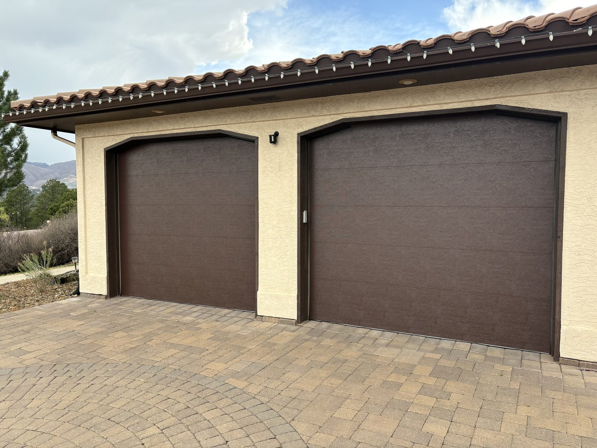

Installation
Garage door installation
Garage door installation starts with fit, design, insulation goals, and the way the door will be used every day. Springs Garage Door Services helps customers choose the right product, hardware, and opener pairing for the home or building, then carries the work through to a clean finish and functional test.
- Measurements and opening review before installation
- Guidance on design, windows, color, and insulation
- Coordination between door hardware and opener setup
- Full functional test and safety check before sign-off
- Manufacturer warranty coverage on doors, openers, and hardware